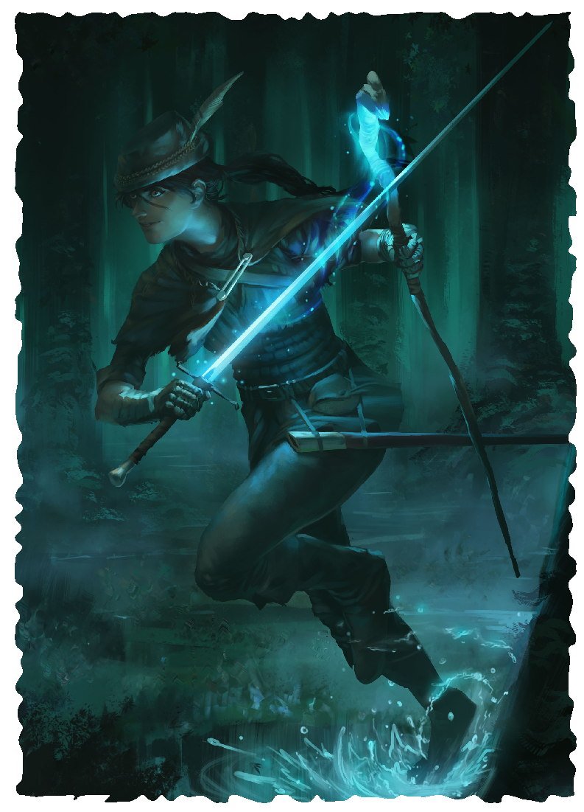

SPELLBINDER
To even the odds against the iron-wielding trolls, the faeries devised the art of spellbinding, a technique that allowed them to channel magical energy into their weapons. Armed with bronze swords limned in eldritch flames and bows capable of loosing empowered arrows, the spellbinders could cut through their enemies’ defenses, driving back or outright destroying their monstrous creations. Ultimately, spellbinding proved to be one of the most significant weapons used in the defeat of the hated trolls and their unspeakable armies. For centuries thereafter, the faeries guarded the secrets of spellbinding from other peoples to ensure their magic could not be used against them. It is not known whether it was revealed by unscrupulous fey or simply discovered by non-fey on their own, but eventually the spellbinding tradition became known by almost all peoples on Rûl.
The heart of spellbinding lies in a single spell, one which allows casters to imbue their weapons with magical energy that binds the weapon to them and enhances the weapon’s deadliness. Spellbinders can call their empowered weapon to hand with a command, reassemble the weapon from fragments, and use the weapon as their implement to cast other spells. In time, spellbinders learn to channel even more magic through the weapon, making them truly formidable combatants.
LEVEL 3 SPELLBINDER
Attributes Increase two by 1
Characteristics Health +3, Power +1
Languages and Professions Add one profession.
Magic You discover a tradition or learn one spell.
Spellbound Weapon You can use an action and expend a casting of a Rank 0 spell to imbue a weapon you touch with magical power for 4 hours. For the duration, you gain the following benefits with the target weapon:
- The weapon counts as a spellcasting focus.
- You make attack rolls with the weapon with 1 boon.
- If the weapon is within 1 mile of you, you can use an action to teleport it to your hand or to your feet.
- You can use an action to touch the target weapon and remove all damage from it, even if the weapon is destroyed, provided you have at least a fragment of it.
- You can use a triggered action to exped a casting of a Rank 0 spell. Until the end of the round, your attacks with the weapon deal extra damage equal to your Power.
LEVEL 6 SPELLBINDER
Characteristics Health +3
Magic You discover a tradition or learn one spell.
Bloody Somatic When the total of your attack roll with the weapon is 20 or higher and exceeds the target number by at least 5, you can use a triggered action to cast a spell with a duration of 1 round or less.
Invest Power You can use an action, or a triggered action on your turn, to invest greater power into the target weapon of your spellbound weapon spell. You touch the weapon and expend the casting of a rank 1 or higher spell. For 1 minute, eldritch flames dance across the weapon, lighting the area within 10 yards of it. While the flames dance, your attacks with the weapon deal 1d6 extra damage.
LEVEL 9 MASTER SPELLBINDER
Characteristics Health +3, Power +1
Magic You discover a tradition or learn one spell.
Magic Weapon When you attack with your spellbound weapon spell, you make the attack roll with 1 boon and your attack deals 1d6 extra damage.